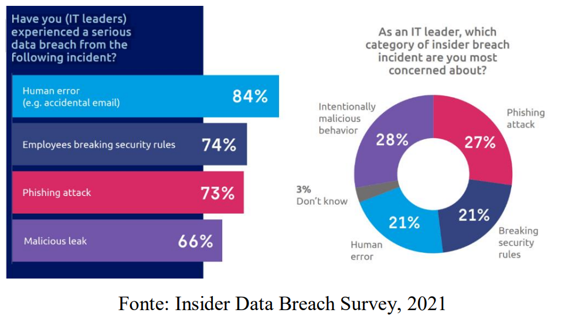

RESUMO: A LGPD apresenta desafios para os profissionais de TI, pois exige uma mudança cultural e não se limita apenas a questões estruturais. É necessário combinar as questões humanas e de infraestrutura para criar um plano de ação que escolha priorize a melhoria da gestão dos dados e promova uma cultura de valorização das informações. Os profissionais de TI precisam estar preparados e bem informados sobre a lei. A combinação de pesquisa bibliográfica e pesquisa de campo fornece estrutura teórica e prática para lidar com os desafios da LGPD.
PALAVRAS-CHAVE: LGPD, privacidade, segurança, TI.
ABSTRACT: The LGPD presents challenges for IT professionals as it requires a cultural shift and goes beyond structural issues. It is necessary to combine human and infrastructure matters to create na action plan that prioritizes the improvement of data management and promotes a culture of information value. IT professionals need to be prepared and well-informed about the law. The combination of bibliographic research and field research provides both theoretical and practical framework to address the challenges of LGPD.
KEYWORDS: LGPD, privacy, security, IT.
1. Introdução
A Lei Geral de Proteção de Dados (LGPD) aparentemente traz muitos desafios para profissionais de segurança de dados pessoais. A procura por métodos de segurança da informação tornou-se intensa, consequentemente exigindo melhorias nas ferramentas já existentes. É de grande importância a aprimoração das mesmas para garantir a integridade e disponibilidade de dados, com intuito de diminuir os riscos de segurança.
Portanto, é de extrema urgência também a conscientização dos colaboradores sobre a responsabilidade para trabalhar com as informações. A lei exige a transparência no tratamento de dados de terceiros, e a missão da equipe de TI é organizar o entendimento de dados em todo seu ciclo de existência.
O objetivo deste artigo é averiguar e exibir os impactos das normas da LGPD para os profissionais de TI e como eles lidarão com as mudanças. Será preciso passar por desafios por adaptações e processos existentes, garantindo o cumprimento da lei.
2. Fundamentação Teórica
2.1. Privacidade e Segurança de Dados
A relação entre privacidade e segurança de dados está interligada, pois a privacidade se refere à esfera íntima de uma pessoa, por outro lado, a segurança de dados procura garantir que as informações pessoais sejam tratadas adequadamente, com respeito aos direitos individuais e evitando violações. No entanto, o avanço tecnológico torna os dados pessoais vulneráveis. Podem ser coletadas de várias formas, como interações sociais e aberturas de contas em serviços. Assim, a legislação de proteção de dados procura equilibrar o poder sobre as informações pessoais, estabelecendo padrões para garantir o direito de liberdade, privacidade e segurança de informações de cada indivíduo.
2.2. Desafios da TI para Atendimento à LGPD
A LGPD traz desafios significativos para profissionais de TI. O primeiro deles é entender os princípios e requisitos da lei, o que requer também uma avaliação minuciosa para identificar as vulnerabilidades. Outro desafio seria o fluxo de informações dentro da empresa. A equipe de TI deve cooperar para saber como é feito o tratamento de dados,garantindo a conformidade com a legislação.
Armazenamento de dados também é considerado um desafio. É necessário investir em ambientes de armazenamento e back-up seguros. A elaboração de um Plano de Recuperação de Desastres é outro desafio importante, pois visa restaurar os dados, processos e sistemas, contemplando atitudes para serem adotadas em um desastre, permitindo a continuidade de serviços de TI para o negócio.
2.3. Ferramentas e Soluções para Adequação à LGPD
2.3.1. Plano de Segurança da Informação
É de extrema importância investir em controles de Segurança da Informação para proteger as informações pessoais contra ameaças. Existe a família de normas ISO/IEC 27000, sendo referência para planejar a segurança da informação. A ISO/IEC 27001 define os requisitos para um Sistema de Gestão de Segurança da Informação, e é altamente recomendável associar essa norma às normas ISO/IEC 27002 e ISO/IEC 27005 para definir regras objetivas no tratamento de dados, estabelecendo um padrão a ser seguido, conforme a legislação.
2.3.2. Política de Senhas Complexas e Autenticação em Múltiplos Fatores
No cotidiano de um usuário, é comum lidar com várias contas e acessos a dados, o que leva a escolher senhas fáceis de lembrar. Portanto, essa atitude enfraquece a segurança e põe em risco a rede da organização, consequentemente facilitando os ataques de invasores para obter acesso. Para prevenção dessas ameaças, é importante que as empresas adotem uma política de senhas fortes e a implementação de autenticação em múltiplos fatores, exigindo outras informações para confirmar a identidade do usuário. Também é importante a conscientização dos usuários sobre a importância da proteção da informação
2.3.3. Proteção de “Endpoints”
Endpoint nada mais é que um ponto de comunicação em uma rede, representado por um dispositivo, serviço, programa ou recurso conectado através da rede. A proteção de endpoints envolve a implementação de medidas de segurança, como manter serviços de segurança e sistemas operacionais atualizados, a fim de detectar malware, infiltrações e programas maliciosos. As ferramentas próprias para segurança dos endpoints podem prevenir invasões em computadores, servidores e outros dispositivos, fornecendo informações sobre eventos suspeitos
2.3.4. Segurança Física de Data Centers e Segurança na Nuvem
Data Center nada mais é que uma estrutura que abriga servidores, sistemas de armazenamento e componentes de rede para gerenciar e armazenar dados e aplicações. Para garantir a segurança dos mesmos envolvem investimentos em controle de acesso restrito somente para pessoas autorizadas, sistemas de vigilância com câmeras e medidas de proteção contra acidentes. A segurança na nuvem permite o crescimento de serviços e protege os dados armazenados em Data Centers, pois é preciso garantir o aumento de operações sem comprometer a proteção dos dados.
2.3.5. Classificação e Armazenamento de Dados
A LGPD define regras claras para o armazenamento de informações, o que requer a revisão regular de dados. O setor da TI desempenha um papel importante no comprometimento com a legislação, sendo responsável por implementação de planos de adequação e monitoramento de eficiência de medidas nas plataformas de fluxo de dados. Empresas que lidam com dados devem contar com ótimas estruturas tecnológicas para garantir um armazenamento de dados seguro, o que requer mudanças relacionadas ao tratamento de dados, como práticas de backup confiáveis, monitoramento de informações e recuperação de dados.
2.3.6. “Application Programming Interface” (API)
As empresas hoje em dia usam tecnologias como APIs para fluxo de informações internamente e externamente. Portanto, é importante que esse fluxo de dados siga as diretrizes da LGPD. As APIs fornecem canais próprios para terceiros acessarem essas informações, facilitando o risco de ataques. Para evitar os mesmos, é necessária uma análise de segurança especial para as APIs, envolvendo equipes de segurança, desenvolvimento e infraestrutura. Essas realizações de testes incluem testes funcionais, de confiabilidade, carga, segurança, integridade-usabilidade, negativos e de validação.
3. Metologia
Esse trabalho foi feito como uma pesquisa descritiva usando métodos de pesquisa em várias fontes, como artigos científicos e publicações em sites. Essa estrutura abrange os desafios da TI para o comprometimento com a Lei Geral de Proteção de Dados e as soluções para estar de acordo com a lei. Para avaliar as causas mais comuns de violações de dados, foi feita a pesquisa, conforme exibido abaixo, segundo o “Insider Data Breach Survey”, feito no ano de 2021, e os resultados foram analisados, com o objetivo de identificar os principais fatores que consequentemente acabaram em apropriação indevida de dados, e quais desses fatores eram mais preocupantes para líderes de TI.

4. Resultados
Conforme os dados obtidos na pesquisa, para a pergunta “Você já passou por uma violação de dados causadas por esses incidentes?”, as respostas foram:
- Erro humano (84%);
- Quebra de normas de segurança (74%);
- Ataques de “phishing” (73%);
- Vazamentos maliciosos (66%).
Ainda na mesma pesquisa, para a pergunta “Você como um líder de TI, qual causa de violação de dados é mais preocupante?”, as respostas foram:
- Comportamento malicioso intencional (28%);
- Ataque “phishing” (27%);
- Quebra de regras de segurança (21%);
- Falha humana (21%);
- Não sabem (3%).
Além disso, um dado preocupante é que aproximadamente 23% dos colaboradores acreditam que podem levar os dados da empresa em casos de mudança de emprego. Isso destaca a importância de medidas como a “Zero Trust”, onde os acessos são cedidos ou negados de acordo com as permissões atribuídas ao usuário. No entanto, ainda existem riscos internos que precisam ser considerados, como espionagem industrial e colaboradores insatisfeitos.
5. Considerações Finais
O avanço da tecnologia e a digitalização do mundo fizeram da informação uma moeda de troca importante. É necessário estabelecer normas para proteção de dados e privacidade. Conclui-se que os profissionais de TI desempenham um papel fundamental para o sucesso no processo de adequação à LGPD, portanto, precisam estar bem capacitados para implementar as mudanças necessárias. A conscientização e o treinamento adequado dos profissionais são essenciais para a segurança dos dados. As organizações devem investir em soluções de cibersegurança e armazenamento de dados para garantir o sucesso do negócio.
6. Referências Bibliográficas